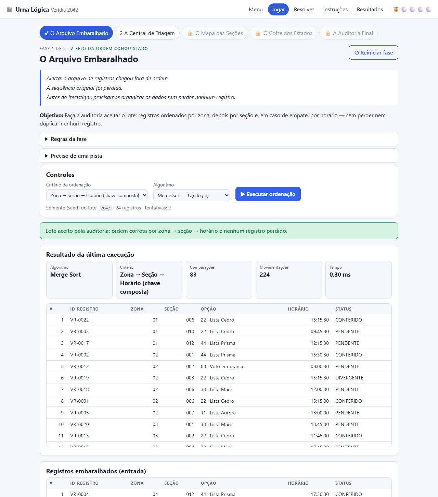
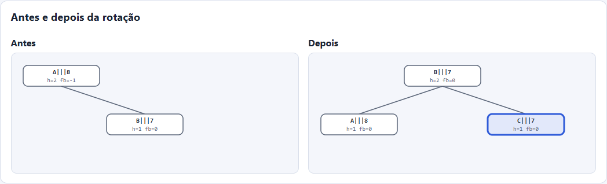
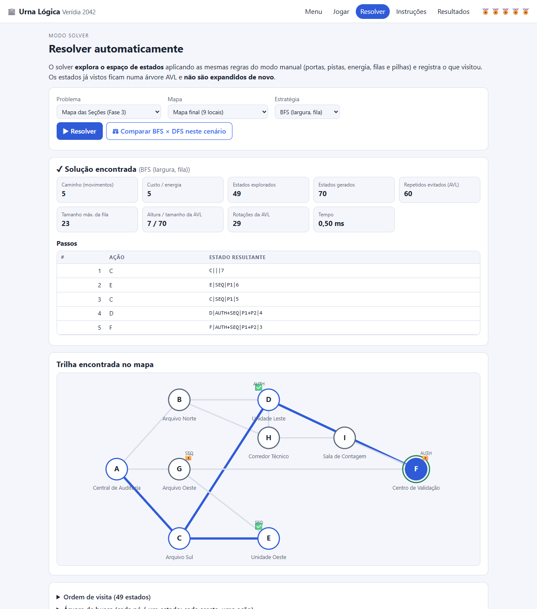
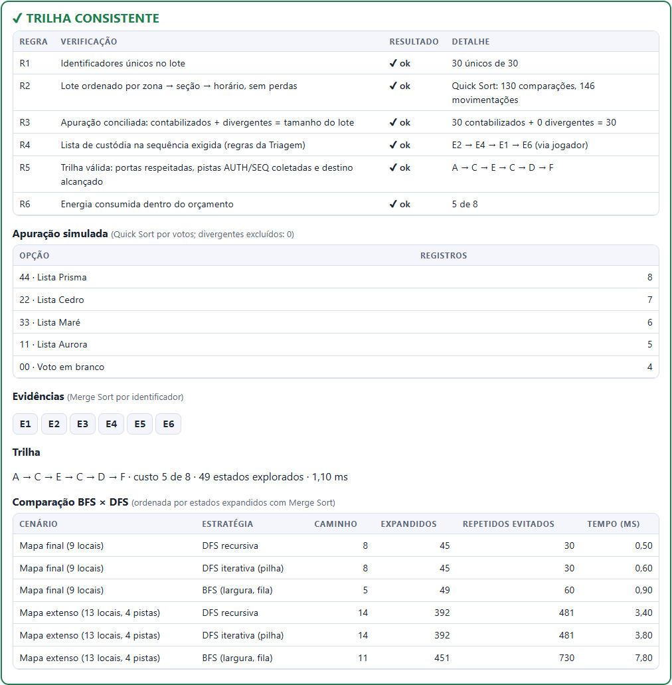
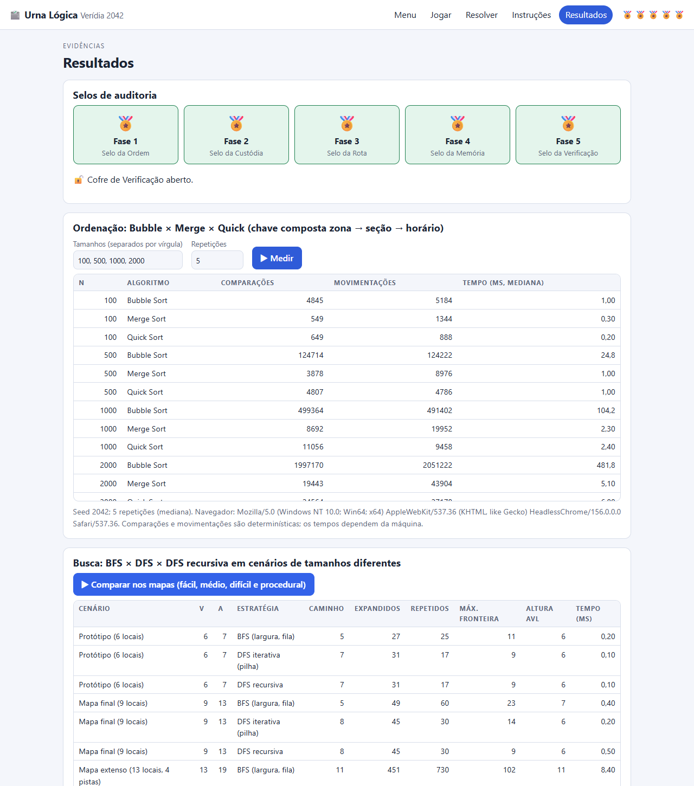

IPT · Mestrado Profissional em Computação Aplicada · Estruturas de Dados e Análise de Algoritmos
Relatório técnico do Exercício Programa · gerado em 08/11/2026
Autoria: [nomes da equipe] · Professora: [nome]
Repositório / jogo online: [URL do GitHub Pages]
Urna Lógica é um jogo de lógica e investigação em HTML, CSS e JavaScript puro (módulos ES, sem build e sem dependências). O jogador é um(a) Analista de Integridade de Dados da Comissão Independente de Verificação (CIV) de Verídia, cidade inteiramente fictícia. Uma falha de sincronização embaralhou os registros da apuração, interrompeu conexões entre locais e espalhou evidências. A pergunta do auditor é: é possível reconstruir uma trilha coerente entre os registros de origem, os locais de votação e o relatório final, respeitando todas as regras do cenário?
O jogo tem cinco fases (um selo cada) e um modo solver que explora o espaço de estados com BFS, DFS iterativa e DFS recursiva usando exatamente as mesmas regras do modo manual. O objetivo não favorece nenhuma opção: todos os dados (locais, códigos, listas “Aurora”, “Cedro”, “Maré”, “Prisma”) são inventados.
Para jogar: npm start e abrir http://localhost:8080/ (ou o link do GitHub Pages). Para testar: npm test (130 testes).
| Fase | Desafio | Regras principais | Condição de sucesso (selo) | Feedback de jogada inválida |
|---|---|---|---|---|
| 1 · O Arquivo Embaralhado | Ordenar um lote de 24 registros fora de ordem. | Cada tentativa parte do lote original. A auditoria exige zona → seção → horário. | Lote ordenado pela chave composta, sem perda nem duplicação. | Sem algoritmo/critério: mensagem de erro. Critério de um campo só: recusa e indica a primeira posição incorreta. |
| 2 · A Central de Triagem | Montar a custódia E2 → E4 → E1 → E6 movendo evidências entre fila, pilha e lista. | FIFO na fila, LIFO na pilha (capacidade 3); lista aceita só o próximo item do alvo; só evidência fora do alvo pode ser descartada. | Lista de custódia igual à sequência exigida. | Mensagem explica por que a jogada foi recusada; nada é alterado. Desfazer (pilha). |
| 3 · O Mapa das Seções | Ir da Central de Auditoria ao Centro de Validação. | Conexões, portas que exigem pistas, energia, coleta de pistas. | Chegar ao destino com todas as pistas exigidas. | Sem conexão, porta bloqueada, energia insuficiente, destino sem pistas; aviso de estado já explorado. |
| 4 · O Cofre dos Estados | Distinguir estados e operar a AVL. | Chave canônica; duplicata rejeitada; rotações. | Classificar 3 pares, ≥ 6 inserções, 1 rotação, 1 duplicata, 1 busca existente e 1 inexistente. | Resposta errada explica por quê; duplicata rejeitada com mensagem. |
| 5 · A Auditoria Final | Lote → ordenação → custódia → trilha → relatório. | Custódia e trilha do jogador (revalidadas) ou do solver. | Relatório com 6 regras de consistência satisfeitas. | Etapa pendente é informada; regra que falha é apontada no relatório. |
Cofre de Verificação: com os cinco selos o jogo abre o cofre e apresenta o resumo da trilha. Reiniciar fase reinicia só a fase atual, preservando os demais selos (RF02). O histórico de ações fica numa lista ligada e é exibido na tela. A seed do menu repete os mesmos dados fictícios (RF03).

| Campo | Exemplo | Regra de validação |
|---|---|---|
id | VR-0081 | Formato VR-dddd; único (repetido é rejeitado pelo RepositorioRegistros). |
zona | 03 | Dois dígitos. |
secao | 014 | Três dígitos. |
opcao | 24 | Código fictício de dois dígitos (11, 22, 33, 44, 00=branco). |
timestamp | 18:42:10 | HH:MM:SS válido (comparável como texto). |
status | PENDENTE | PENDENTE, CONFERIDO ou DIVERGENTE. |
Não foram acrescentados campos além dos exigidos. O status DIVERGENTE é usado na conciliação da apuração (regra R3 da Fase 5).
Seis evidências fictícias E1…E6. Estado da triagem = (fila, pilha, lista, descarte), serializado em chave canônica F:…|P:…|L:…|D:… para o solver (histórico de jogadas não faz parte do estado).
Representação: lista de adjacência. O mapa é esparso (|E| ≈ |V|): a lista ocupa O(V+E) contra O(V²) da matriz e gera os vizinhos de um vértice em O(grau). Grafo não dirigido: os corredores são de mão dupla; o que restringe a passagem são as portas (condição sobre o vértice de destino), não o sentido da aresta. Todas as arestas custam 1 de energia (o código aceita pesos).
Conexões: A–B, A–C, A–G, B–D, B–H, C–D, C–E, G–E, G–F, D–H, D–F, H–I, I–F. Bifurcações (3 ou mais saídas): A, B, C, G, D, H, F. Caminhos alternativos: A–B–D–F, A–C–D–F, A–G–F (bloqueado), A–B–H–I–F, entre outros.
| Vértice | Local fictício | Pista | Porta que o guarda |
|---|---|---|---|
| A | Central de Auditoria | — | — |
| B | Arquivo Norte | — | — |
| C | Arquivo Sul | — | — |
| G | Arquivo Oeste | — | P1 (exige SEQ) |
| D | Unidade Leste | AUTH | — |
| H | Corredor Técnico | — | — |
| E | Unidade Oeste | SEQ | — |
| I | Sala de Contagem | — | — |
| F | Centro de Validação | — | P2 (exige AUTH) |
Também existem o protótipo do enunciado (6 vértices, 7 conexões) e um mapa extenso (13 vértices, 19 conexões, 4 pistas, 3 portas encadeadas), além do gerador procedural por seed.
posição|pistas|portas|energia, com pistas e portas em ordem alfabética. Exemplo: D|AUTH|P2|5 e D|||5 são estados distintos (mesmo vértice, ações diferentes); E|AUTH+SEQ|P1+P2|4 é a chave tanto de “coletei AUTH e depois SEQ” quanto do inverso (equivalentes).Tradução das frases do enunciado: “a rota final precisa passar por um ponto de autenticação antes do Centro de Validação” ⇒ F é guardado pela porta P2, liberada apenas pela pista AUTH, que só existe na Unidade Leste (D). “A passagem pelo Arquivo Oeste só é permitida depois de coletar a pista de sequência” ⇒ G é guardado pela porta P1, liberada por SEQ (Unidade Oeste, E).
| Cenário | Caminho | Resultado do validador |
|---|---|---|
| 1 — o mais curto em conexões (2 arestas) | A → G → F | inválido no passo 1: A porta P1 de Arquivo Oeste (G) está bloqueada: exige a pista SEQ. |
| 2 — passa pelo Arquivo Oeste com SEQ, mas sem autenticação | A → C → E → G → F | inválido no passo 4: A porta P2 de Centro de Validação (F) está bloqueada: exige a pista AUTH. |
| 3 — rota válida encontrada pelo solver (BFS) | A → C → E → C → D → F | válido, custo 5, pistas AUTH + SEQ |
Esses cenários estão automatizados em tests/grafo-busca.test.js. Além disso, um teste confirma que as saídas de BFS, DFS e DFS recursiva, em todos os mapas, são revalidadas por Cenario.validarCaminho.
index.html · css/style.css src/core/ regras e algoritmos — SEM DOM; roda no Node (testes) e no navegador estruturas/ Fila.js · Pilha.js · ListaLigada.js · AVL.js ordenacao/ ordenacao.js (Bubble, Merge, Quick + contadores) registros.js Registro, RepositorioRegistros, seed, embaralhar, critérios rng.js mulberry32 (PRNG com seed) grafo/ Grafo.js · cenario.js (Estado, regras R1–R5) · busca.js (BFS, DFS, DFS-rec) fases/ fase1…fase5.js (regras de cada fase) jogo.js · gerador.js · benchmark.js src/ui/ app.js (roteador) · views/ (menu, jogar, resolver, instrucoes, resultados) · svg.js · dom.js src/dados/ mapas.js · textos.js · iag.js ← dados separados do código tests/ 5 arquivos, 19 suítes, 130 testes scripts/ serve.js (servidor local) · bench.js · gerar-relatorio.js
Separação de responsabilidades (RNF): regras do jogo (fases/, cenario.js), estruturas de dados (estruturas/), algoritmos (ordenacao/, busca.js), interface (ui/) e dados de entrada (dados/) ficam em módulos independentes. core/ não referencia o DOM, por isso é testável no Node. O solver reutiliza as regras do modo manual: Cenario.sucessores chama tentarMover (a mesma função do clique do jogador) e Triagem.problema chama Triagem.executar. Não existe solução paralela nem sequência fixa escondida no código.
| Estrutura | Implementação | Operações / custo | Uso no jogo |
|---|---|---|---|
| Vetor de registros | Array de objetos Registro imutáveis + conjunto de ids para rejeitar duplicatas. | acesso O(1); inserção O(1) amortizado. | Fase 1 e lote da Fase 5. |
| Fila (FIFO) | Nós encadeados com ponteiros início/fim (sem Array.shift). | enqueue, dequeue, front, isEmpty: O(1). Vazia ⇒ undefined. | Fila de entrada da Fase 2; fronteira da BFS. |
| Pilha (LIFO) | Nós encadeados com ponteiro para o topo. | push, pop, peek, isEmpty: O(1). | Pilha temporária e histórico/desfazer (Fases 2 e 3); fronteira da DFS iterativa. |
| Lista ligada dupla | Nós com ant/prox e ponteiros início/fim. | inserir/remover no início ou fim: O(1); por índice: O(n/2); buscar: O(n). | Lista de custódia; histórico de ações do jogo. |
| Árvore AVL | BST com altura em cada nó, fator de balanceamento e 4 rotações. | busca e inserção: O(h) = O(log n). | Estados visitados do solver e do modo manual; Fase 4. |
| Grafo | Lista de adjacência (Map vértice → vizinhos). | vizinhos: O(grau); espaço O(V+E). | Mapa da Fase 3. |
Por que lista duplamente ligada? A custódia cresce pelo fim e o “desfazer” remove o último elemento. Com o ponteiro ant, removerFim é O(1); numa lista simples seria O(n) (percorrer até o penúltimo nó). O custo é um ponteiro extra por nó, irrelevante para listas de poucos elementos. A lista também escolhe a extremidade mais próxima ao acessar um índice.
Por que AVL para os estados visitados (e não um conjunto de hash)? Foi a aplicação escolhida entre as três permitidas (estados visitados, evidências, configurações). A chave de estado é uma string comparável; a AVL garante busca/inserção O(log n) no pior caso (uma BST comum degenera em O(n) com chaves quase ordenadas, como A|…, B|…, C|…), mantém as chaves ordenadas e permite medir altura e rotações (RF09). Além de implementada, ela é usada: BFS, DFS e DFS recursiva consultam-na antes de expandir cada estado.
Para cada tipo de rotação, abaixo estão a árvore logo após a inserção, ainda desbalanceada (desenhada a partir da BST sem rebalancear) e a árvore depois (saída real de AVL.paraTexto(), subárvore direita no topo).
┌── 30 (h=1, fb=0)
┌── 20 (h=2, fb=-1)
10 (h=3, fb=-2) ┌── 30 (h=1, fb=0)
20 (h=2, fb=0)
└── 10 (h=1, fb=0)30 (h=3, fb=2)
└── 20 (h=2, fb=1)
└── 10 (h=1, fb=0) ┌── 30 (h=1, fb=0)
20 (h=2, fb=0)
└── 10 (h=1, fb=0)30 (h=3, fb=2)
│ ┌── 20 (h=1, fb=0)
└── 10 (h=2, fb=-1) ┌── 30 (h=1, fb=0)
20 (h=2, fb=0)
└── 10 (h=1, fb=0) ┌── 30 (h=2, fb=1)
│ └── 20 (h=1, fb=0)
10 (h=3, fb=-2) ┌── 30 (h=1, fb=0)
20 (h=2, fb=0)
└── 10 (h=1, fb=0) ┌── 40 (h=1, fb=0)
┌── 30 (h=2, fb=0)
│ └── 25 (h=1, fb=0)
20 (h=3, fb=0)
│ ┌── 15 (h=1, fb=0)
└── 10 (h=2, fb=0)
└── 5 (h=1, fb=0)
Busca por 15 (existe): encontrada em 3 comparações, caminho 20 → 10 → 15.
Busca por 27 (não existe): 3 comparações, caminho 20 → 30 → 25, termina numa folha sem encontrar.
Altura: ao inserir 1…1023 em ordem crescente (pior caso de uma BST comum, que teria altura 1023), a AVL terminou com altura 10 e 1013 rotações; o limite teórico é 1,44·log₂(n+2) ≈ 14.4.

Os três algoritmos ordenam uma cópia do vetor e devolvem o vetor, o nº de comparações (cada chamada ao comparador) e de movimentações (cada escrita de elemento no vetor: uma troca = 2; no Merge, cada cópia = 1) e o tempo.
≤ 0 na intercalação garante estabilidade. O(n log n) sempre; O(n) de memória extra.Chave composta (enigma 5.3): comparar zona (numérica); empatando, seção (numérica); empatando, horário (HH:MM:SS, comparável como texto); empatando, o id como desempate final. Isso torna a ordem total, idêntica nos três algoritmos (inclusive no Quick, que não é estável); um teste compara os três em 5 seeds × 6 critérios. Ordenar só por um campo é recusado: o horário se repete entre zonas diferentes, então ordenar “só por horário” (ou “só por zona”) deixa a seção/horário fora de ordem.
| n | Algoritmo | Comparações | Movimentações | Tempo (ms) |
|---|---|---|---|---|
| 100 | Bubble Sort | 4.845 | 5.184 | 1,61 |
| 100 | Merge Sort | 549 | 1.344 | 0,46 |
| 100 | Quick Sort | 649 | 888 | 0,38 |
| 500 | Bubble Sort | 124.714 | 124.222 | 48,3 |
| 500 | Merge Sort | 3.878 | 8.976 | 3,64 |
| 500 | Quick Sort | 4.807 | 4.786 | 3,45 |
| 1.000 | Bubble Sort | 499.364 | 491.402 | 213,0 |
| 1.000 | Merge Sort | 8.692 | 19.952 | 3,24 |
| 1.000 | Quick Sort | 11.056 | 9.458 | 4,33 |
| 2.000 | Bubble Sort | 1.997.170 | 2.051.222 | 1061,9 |
| 2.000 | Merge Sort | 19.443 | 43.904 | 15,6 |
| 2.000 | Quick Sort | 24.564 | 27.178 | 10,6 |
| 5.000 | Bubble Sort | 12.495.789 | 12.209.332 | 7277,4 |
| 5.000 | Merge Sort | 55.257 | 123.616 | 26,8 |
| 5.000 | Quick Sort | 76.449 | 73.176 | 33,3 |
| Entrada | Algoritmo | Comparações | Movimentações |
|---|---|---|---|
| Aleatório | Bubble | 1.997.170 | 2.051.222 |
| Aleatório | Merge | 19.443 | 43.904 |
| Aleatório | Quick | 24.564 | 27.178 |
| Já ordenado | Bubble | 1.999 | 0 |
| Já ordenado | Merge | 11.088 | 43.904 |
| Já ordenado | Quick | 17.964 | 4.092 |
| Ordem inversa | Bubble | 1.999.000 | 3.998.000 |
| Ordem inversa | Merge | 10.864 | 43.904 |
| Ordem inversa | Quick | 18.799 | 20.884 |
Leitura (teoria × experimento): as contagens confirmam a teoria: no Bubble, ao passar de n=1000 para n=2000 as comparações foram de 499.364 para 1.997.170 (≈ ×4, crescimento quadrático), enquanto Merge e Quick cresceram pouco mais que ×2 (n log n). Já ordenado, o Bubble faz apenas n−1 comparações (parada antecipada). Os tempos seguem a mesma ordem, mas variam entre execuções (coleta de lixo, JIT) — por isso usamos a mediana e tratamos as contagens como a evidência confiável.
As três estão em src/core/grafo/busca.js e resolvem qualquer “problema” {inicial, chave, objetivo, sucessores} — o mapa e a custódia usam o mesmo motor. Em todas, a AVL de estados visitados impede reexpansão.
Fila própria; marca o estado ao enfileirar. Visita por camadas.Pilha própria; marca ao desempilhar; empilha os sucessores em ordem inversa para o primeiro vizinho sair primeiro.null; caso-base 2: estado objetivo ⇒ retorna o nó; chamadas recursivas: uma por sucessor; condição de retorno: sucessores esgotados ⇒ null (volta ao chamador). A profundidade é limitada pela energia (14 no mapa mais extenso; 2·|V| nos procedurais, p. ex. 60), longe do limite de pilha do JavaScript (~10 mil quadros). Um teste mostra que a DFS recursiva visita os estados na mesma ordem da iterativa.Por que BFS para o solver (mapa e custódia)? O custo por movimento é uniforme e o que interessa ao auditor é a trilha mais curta/econômica: a BFS dá isso com garantia. A DFS é mantida como estratégia alternativa porque usa menos memória de fronteira e acha alguma solução, mas devolve rotas mais longas (tabela abaixo: 40 contra 6 movimentos no mapa procedural).
| Cenário | V | A | Estratégia | Caminho | Expandidos | Repetidos evitados | Máx. fronteira | Altura AVL | Tempo (ms) |
|---|---|---|---|---|---|---|---|---|---|
| Protótipo (6 locais) | 6 | 7 | BFS (largura, fila) | 5 | 27 | 25 | 11 | 6 | 0,42 |
| Protótipo (6 locais) | 6 | 7 | DFS iterativa (pilha) | 7 | 31 | 17 | 9 | 6 | 0,31 |
| Protótipo (6 locais) | 6 | 7 | DFS recursiva | 7 | 31 | 17 | 9 | 6 | 0,41 |
| Mapa final (9 locais) | 9 | 13 | BFS (largura, fila) | 5 | 49 | 60 | 23 | 7 | 0,64 |
| Mapa final (9 locais) | 9 | 13 | DFS iterativa (pilha) | 8 | 45 | 30 | 14 | 6 | 0,40 |
| Mapa final (9 locais) | 9 | 13 | DFS recursiva | 8 | 45 | 30 | 9 | 6 | 0,35 |
| Mapa extenso (13 locais, 4 pistas) | 13 | 19 | BFS (largura, fila) | 11 | 451 | 730 | 102 | 11 | 9,77 |
| Mapa extenso (13 locais, 4 pistas) | 13 | 19 | DFS iterativa (pilha) | 14 | 392 | 481 | 23 | 10 | 4,95 |
| Mapa extenso (13 locais, 4 pistas) | 13 | 19 | DFS recursiva | 14 | 392 | 481 | 15 | 10 | 4,99 |
| Procedural (seed 7, 20 locais, 3 pistas) | 20 | 30 | BFS (largura, fila) | 6 | 291 | 538 | 128 | 10 | 4,51 |
| Procedural (seed 7, 20 locais, 3 pistas) | 20 | 30 | DFS iterativa (pilha) | 40 | 221 | 219 | 102 | 10 | 2,38 |
| Procedural (seed 7, 20 locais, 3 pistas) | 20 | 30 | DFS recursiva | 40 | 221 | 219 | 41 | 10 | 2,85 |
Leitura: a BFS devolveu sempre o menor caminho (5, 5, 11, 6 movimentos); a DFS devolveu 7, 8, 14, 40. No mapa procedural a DFS percorreu 40 movimentos contra 6 da BFS: nos três cenários maiores o caminho da DFS tem exatamente o tamanho do orçamento de energia que ela “gastou” passeando antes de achar o objetivo. Quanto a estados expandidos, nenhuma estratégia é sistematicamente melhor: a DFS expandiu mais no protótipo (31 contra 27) e menos nos outros três (45×49, 392×451, 221×291), porque ela para no primeiro objetivo que encontra, enquanto a BFS precisa varrer toda a camada anterior. A BFS paga com fronteira maior no mapa procedural (máx. 128 contra 102 da DFS iterativa); a DFS recursiva paga com a pilha de chamadas (profundidade máxima 41 ali). A altura da AVL de visitados ficou entre 6 e 11 para até 451 estados expandidos, coerente com O(log n).
| Estratégia | Jogadas | Estados expandidos |
|---|---|---|
| BFS | 7 | 33 |
| DFS | 12 | 17 |
| DFS-REC | 12 | 17 |
A solução mínima tem 7 jogadas: 4 aceites na lista, 2 descartes (E3 e E5) e 1 guarda de E1 na pilha. Sequência encontrada pela BFS: F>P F>L F>D F>L F>D P>L F>L.
Cada nó da árvore registrada é um estado e cada aresta, a ação que levou a ele; estados repetidos aparecem como folhas “↺ já visitado”. A tela Resolver exibe a árvore (até 250 linhas) e a ordem de visita. Amostra do protótipo de 6 locais com BFS (primeiras 40 linhas):
início [A|||8] ├─ → B [B|||7] │ ├─ → A [A|||6] │ │ ├─ → B [B|||5] │ │ │ ├─ → A [A|||4] │ │ │ │ ├─ → B [B|||3] │ │ │ │ │ ├─ → A [A|||2] │ │ │ │ │ └─ → D [D|AUTH|P2|2] │ │ │ │ └─ → C [C|||3] │ │ │ │ ├─ → A [A|||2] ↺ já visitado │ │ │ │ ├─ → D [D|AUTH|P2|2] ↺ já visitado │ │ │ │ └─ → E [E|SEQ||2] │ │ │ └─ → D [D|AUTH|P2|4] │ │ │ ├─ → B [B|AUTH|P2|3] │ │ │ │ ├─ → A [A|AUTH|P2|2] │ │ │ │ └─ → D [D|AUTH|P2|2] ↺ já visitado │ │ │ ├─ → C [C|AUTH|P2|3] │ │ │ │ ├─ → A [A|AUTH|P2|2] ↺ já visitado │ │ │ │ ├─ → D [D|AUTH|P2|2] ↺ já visitado │ │ │ │ └─ → E [E|AUTH+SEQ|P2|2] │ │ │ └─ → F [F|AUTH|P2|3] │ │ │ ├─ → D [D|AUTH|P2|2] ↺ já visitado │ │ │ └─ → E [E|AUTH+SEQ|P2|2] ↺ já visitado │ │ └─ → C [C|||5] │ │ ├─ → A [A|||4] ↺ já visitado │ │ ├─ → D [D|AUTH|P2|4] ↺ já visitado │ │ └─ → E [E|SEQ||4] │ │ └─ → C [C|SEQ||3] │ │ ├─ → A [A|SEQ||2] │ │ ├─ → D [D|AUTH+SEQ|P2|2] │ │ └─ → E [E|SEQ||2] ↺ já visitado │ └─ → D [D|AUTH|P2|6] │ ├─ → B [B|AUTH|P2|5] │ │ ├─ → A [A|AUTH|P2|4] │ │ │ ├─ → B [B|AUTH|P2|3] ↺ já visitado │ │ │ └─ → C [C|AUTH|P2|3] ↺ já visitado │ │ └─ → D [D|AUTH|P2|4] ↺ já visitado │ ├─ → C [C|AUTH|P2|5] │ │ ├─ → A [A|AUTH|P2|4] ↺ já visitado │ │ ├─ → D [D|AUTH|P2|4] ↺ já visitado … (árvore truncada em 40 linhas; total de nós: 62)
Por que a árvore cresce rápido? Sem a AVL, o número de nós da árvore é da ordem de bd (b = ramificação ≈ grau médio, d = profundidade/energia). Com a AVL, cada estado é expandido uma vez, e o espaço de estados tem no máximo |V| × 2|pistas| × (energia+1) elementos (seção 8). Não é necessário explorar todas as possibilidades: o solver para no primeiro objetivo, o que é suficiente porque o objetivo do auditor é existir uma trilha consistente (e, na BFS, a primeira já é a mais curta).

O relatório final usa três ordenações próprias, além da Fase 1: Quick Sort para classificar a apuração por votos (decrescente), Merge Sort para ordenar as evidências por identificador e Merge Sort para ranquear os resultados de execução (BFS/DFS) por estados expandidos. As três implementações continuam disponíveis e testáveis (tests/registros-ordenacao.test.js).

Os testes usam o executor nativo do Node (node --test), sem dependências, e rodam a cada push no GitHub Actions. Todos são determinísticos (seeds fixas). Resultado: 130 testes, 19 suítes, 130 aprovados, 0 falhas.
| Módulo (seção 15) | Casos exigidos | Onde |
|---|---|---|
| Registros e vetor | vetor vazio; um registro; id repetido rejeitado; carga válida/inválida; seed reproduzível; embaralhamento preserva o conjunto | registros-ordenacao.test.js · “Registros e vetor” |
| Ordenação | vazio; 1 elemento; já ordenado; ordem inversa; repetidos; chave composta; os 3 algoritmos coincidem; estabilidade do Merge; contagens | registros-ordenacao.test.js · “Ordenação” |
| Pilha | vazia; 1 elemento; vários push/pop; peek; pop vazio | estruturas.test.js |
| Fila | vazia; 1 elemento; FIFO; dequeue vazio; devolver ao início (desfazer) | estruturas.test.js |
| Lista ligada | inserção início/meio/fim; remoção início/meio/fim; busca; lista vazia; inexistente; índice inválido | estruturas.test.js |
| Grafo | vértice isolado; destino inalcançável; ciclos; caminhos alternativos; vizinhos repetidos; dirigido | grafo-busca.test.js · “Grafo” |
| BFS/DFS | grafo pequeno com ordem de visita conhecida (BFS e DFS); mesma ordem da DFS recursiva; nenhum estado expandido duas vezes; BFS×pesos; árvore de busca | grafo-busca.test.js |
| Estados e AVL | mesma posição/pistas diferentes ⇒ chaves diferentes; ordem de coleta irrelevante; chave duplicada; busca existente/inexistente; as 4 rotações; invariantes em 2000 inserções aleatórias; altura em 1023 inserções ordenadas | avl.test.js · grafo-busca.test.js · jogo.test.js (Fase 4) |
| Regras do jogo | jogada válida/inválida; porta bloqueada; pista coletada; energia insuficiente; reinício; conclusão; desfazer; dica | grafo-busca.test.js · jogo.test.js (Fases 1–4) |
| Integração | partida manual completa até o cofre; Fase 5 só com solver (BFS e DFS); jogo manual × solver com o mesmo veredito; relatório inconsistente quando a ordenação ou a trilha violam as regras | jogo.test.js · “Jogo e Fase 5” |
Teste de interface (manual automatizado). Uma partida completa, de ponta a ponta, foi executada no Google Chrome (35 verificações: feedback de erro e sucesso de cada fase, desfazer, dica do solver, selos, cofre, solver nos três modos, benchmarks, tela de celular sem rolagem horizontal) e terminou sem nenhum erro de console. [Complementar: teste com uma pessoa que não programou o jogo, sem explicações orais — etapa 12 do roteiro. Registrar data, observações e ajustes.]
Corretude do modelo de estados. Os testes demonstram que o estado com a mesma posição mas com/sem a pista AUTH recebe chaves diferentes e que o solver, ao explorar o mapa médio, visita o vértice D com e sem SEQ (estados distintos), enquanto reconhece como repetido o que é realmente equivalente.
| Operação | Complexidade | Relação com a implementação |
|---|---|---|
| Bubble Sort | O(n²) (O(n) se ordenado) | dois laços aninhados; trocou interrompe cedo. |
| Merge Sort | O(n log n); memória O(n) | recorrência T(n)=2T(n/2)+O(n); vetor auxiliar único. |
| Quick Sort | O(n log n) médio; O(n²) pior | Lomuto, pivô do meio; recursão só na menor partição ⇒ pilha O(log n). |
| Fila/Pilha | O(1) | ponteiros de início/fim/topo. |
| Lista dupla | O(1) nas pontas; O(n) por índice/busca | início/fim + extremidade mais próxima. |
| AVL busca/inserção | O(h) = O(log n) | h ≤ 1,44·log₂(n+2); medido em 10 para n=1023. |
| BFS/DFS (grafo explícito) | O(V+E) | cada vértice enfileirado/empilhado uma vez. |
| BFS/DFS (espaço de estados + AVL) | O(S · (b + log S)) com S = estados alcançáveis | cada estado é expandido uma vez; cada sucessor custa uma consulta O(log S) à AVL. |
| Espaço de estados do mapa | S ≤ |V| · 2p · (E+1) | p = pistas, E = energia inicial. |
Energia (mapa médio). Com energia 4 o objetivo é inalcançável (o caminho mínimo tem 5 movimentos): o solver precisa esgotar todo o espaço alcançável (30 estados) para concluir que não há solução — é aí que o tamanho do espaço de estados pesa. Com energia suficiente, a BFS expande sempre os mesmos 49 estados, porque encontra o caminho mínimo na camada 5 e para, não importa quanta energia sobre. Já a DFS sofre com a folga: o custo cresce com a energia (43 → 57 expandidos) e o caminho devolvido tem exatamente o tamanho do orçamento (a energia faz parte da chave, então cada “volta” é um estado novo e a DFS continua passeando até achar o objetivo):
| Energia | BFS achou? | BFS expandidos | Estados na AVL | DFS achou? | DFS expandidos | Caminho DFS |
|---|---|---|---|---|---|---|
| 4 | não | 30 | 30 | não | 30 | — |
| 5 | sim | 49 | 49 | sim | 48 | 5 |
| 6 | sim | 49 | 70 | sim | 43 | 6 |
| 8 | sim | 49 | 70 | sim | 45 | 8 |
| 10 | sim | 49 | 70 | sim | 47 | 10 |
| 12 | sim | 49 | 70 | sim | 49 | 12 |
| 16 | sim | 49 | 70 | sim | 53 | 16 |
| 20 | sim | 49 | 70 | sim | 57 | 20 |
Cota teórica para o mapa médio: 9 × 2² × (E+1) estados (756 com E=20); na prática só uma fração é alcançável. Sem a AVL, o número de caminhos de até 20 movimentos seria exponencial.
Locais e pistas (mapas procedurais, seed 7, energia = 2·|V|). Cada pista adicional multiplica por até 2 as combinações de pistas possíveis (2p) e cada local adiciona posições. Como cada tamanho/pistas sorteia um mapa diferente, a tendência é de crescimento, mas não é monótona (por exemplo, com 10 locais a BFS expandiu 158 estados com 3 pistas e 124 com 4; com 20 e 30 locais o crescimento foi contínuo):
| Locais | Pistas | BFS expandidos | Caminho BFS | DFS expandidos | Caminho DFS |
|---|---|---|---|---|---|
| 10 | 1 | 28 | 4 | 30 | 20 |
| 10 | 2 | 53 | 5 | 54 | 19 |
| 10 | 3 | 158 | 8 | 82 | 20 |
| 10 | 4 | 124 | 7 | 86 | 20 |
| 15 | 1 | 67 | 5 | 81 | 30 |
| 15 | 2 | 82 | 5 | 95 | 30 |
| 15 | 3 | 74 | 5 | 88 | 30 |
| 15 | 4 | 255 | 7 | 228 | 30 |
| 20 | 1 | 140 | 6 | 161 | 40 |
| 20 | 2 | 246 | 8 | 161 | 40 |
| 20 | 3 | 291 | 6 | 221 | 40 |
| 20 | 4 | 669 | 8 | 431 | 40 |
| 30 | 1 | 248 | 10 | 268 | 60 |
| 30 | 2 | 361 | 10 | 384 | 60 |
| 30 | 3 | 855 | 12 | 822 | 60 |
| 30 | 4 | 1.275 | 12 | 1.038 | 60 |
Uma porta adicional reduz as ações disponíveis nos estados em que está fechada (poda a árvore), mas exige coletar pistas numa certa ordem, então o efeito líquido no número de estados depende do mapa. O que as tabelas mostram é que, mesmo com 30 locais, 4 pistas e energia 60 (até 30·16·61 ≈ 29 mil estados possíveis), a BFS expandiu 1275 estados: o conjunto alcançável é bem menor que a cota teórica, e muito menor que o número de caminhos, porque a AVL elimina as repetições. Esses números descrevem estes mapas e esta seed; não são uma lei geral.
Ambiente: Intel(R) Core(TM) i7-7500U CPU @ 2.70GHz · 4 threads · 24 GB RAM · Windows_NT 10.0.26300 · Node 26.12.1 (win32/x64). Tamanhos de dados: ordenação com n ∈ {100, 500, 1000, 2000, 5000} (seed 2042); busca nos 4 cenários acima. Repetições: 7 por medida (mediana). Limitações: tempos em milissegundos de um único processo Node sofrem influência de JIT, coleta de lixo e do sistema operacional, e não devem ser comparados com tempos de outra máquina; as contagens de comparações, movimentações e estados são determinísticas e é nelas que a análise se apoia. A medição no navegador (tela Resultados) usa o mesmo código e é afetada pelo navegador e pela máquina de quem executa.

Este projeto foi desenvolvido com o auxílio do Claude (Anthropic), um assistente de inteligência artificial, na construção do código, dos testes, da interface e da documentação. O resultado foi verificado com os testes automatizados do projeto (npm test) e com a execução do jogo no navegador.
dequeue exige reinserir na frente; foi criada devolverAoInicio, restrita ao desfazer e documentada.id entrou como último critério.id.maxEstados, que o motor já suporta.Editor de fases a partir dos dados JS; heurística A* comparada à BFS; fila de prioridade para alertas; animação passo a passo da fila/pilha/AVL e modo cooperativo (extensões da seção 18).
O jogo cumpre os requisitos obrigatórios: cinco fases jogáveis com feedback, reinício e desfazer; estruturas lineares e AVL implementadas e usadas; três ordenações com métricas; grafo, estados completos, BFS, DFS e DFS recursiva com árvore de busca; solver que reutiliza as regras do jogo; testes com casos-limite e integração; e análise que separa a teoria (contagens determinísticas) da evidência experimental (tempos dependentes da máquina). A conclusão central é que a modelagem do estado e a AVL de visitados — e não a força bruta — é o que torna a busca viável e confiável.